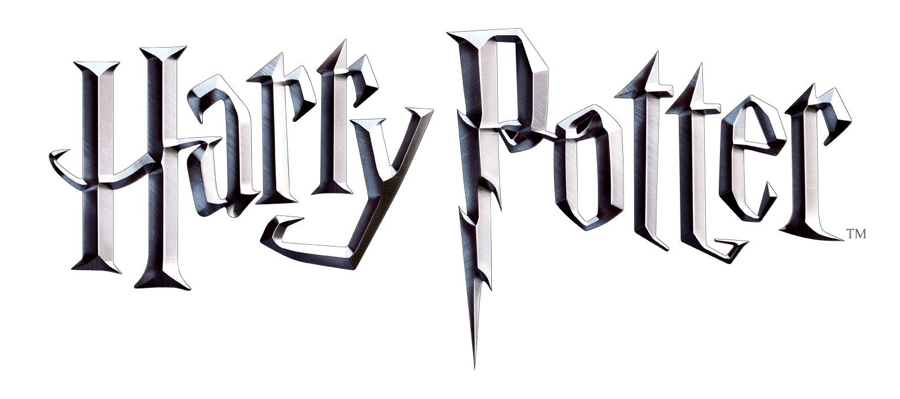

Harry Potter is a film series based on the eponymous novels by J. K. Rowling. The series is produced and distributed by Warner Bros.
Pictures and consists of eight fantasy films, beginning with Harry Potter and the Philosopher's Stone (2001) and culminating with Harry Potter and the Deathly Hallows – Part 2 (2011).
A spin-off prequel series, planned to consist of five films, started with Fantastic Beasts and Where to Find Them (2016), marking the beginning of the Wizarding World shared media franchise.
Fantastic Beasts and Where to Find Them is a 2016 fantasy film directed by David Yates and written by J. K. Rowling. It is the first instalment in the Fantastic Beasts film series and the ninth overall in the Wizarding World franchise,
serving as a spin-off of and prequel to the Harry Potter film series, inspired by the 2001 guide book of the same name by Rowling.
Movies by chronological order:
- Fantastic Beasts and Where to Find Them (2016)
- Fantastic Beasts: The Crimes of Grindelwald (2018)
- Fantastic Beasts: The Secrets of Dumbledore (2022)
- Harry Potter and the Philosopher's Stone (2001)
- Harry Potter and the Chamber of Secrets (2002)
- Harry Potter and the Prisoner of Azkaban (2004)
- Harry Potter and the Goblet of Fire (2005)
- Harry Potter and the Order of the Phoenix (2007)
- Harry Potter and the Half-Blood Prince (2009)
- Harry Potter and the Deathly Hallows: Part 1 (2010)
- Harry Potter and the Deathly Hallows: Part 2 (2011)
Movies by order of release:
- Harry Potter and the Philosopher's Stone (2001)
- Harry Potter and the Chamber of Secrets (2002)
- Harry Potter and the Prisoner of Azkaban (2004)
- Harry Potter and the Goblet of Fire (2005)
- Harry Potter and the Order of the Phoenix (2007)
- Harry Potter and the Half-Blood Prince (2009)
- Harry Potter and the Deathly Hallows: Part 1 (2010)
- Harry Potter and the Deathly Hallows: Part 2 (2011)
- Fantastic Beasts and Where to Find Them (2016)
- Fantastic Beasts: The Crimes of Grindelwald (2018)
- Fantastic Beasts: The Secrets of Dumbledore (2022)
Visit the Wizarding World
or go back to Homepage